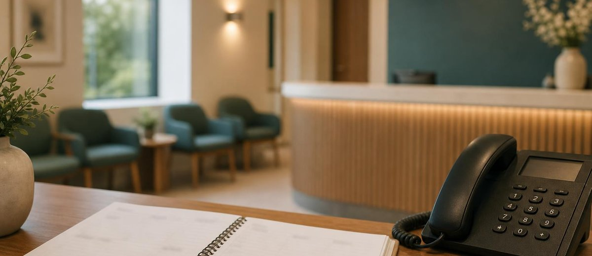

Recepción de clínica dental: cómo organizar las horas punta

El teléfono suena mientras recepción cobra una visita. Entra otro paciente. Desde el gabinete preguntan por la siguiente cita. Y alguien tiene que resolverlo todo sin dejar a nadie a medias.
Si la respuesta del dueño es «hay que coger más rápido el teléfono», todavía falta una parte de la conversación. No siempre estamos ante un problema de actitud. Puede que hayamos diseñado un puesto en el que varias tareas importantes exigen atención al mismo tiempo.
El post de hoy en LinkedIn planteaba una pregunta: antes de pagar para que suene más el teléfono, ¿sabemos qué hacemos cuando suena? Aquí vamos un paso más allá: cómo organizar las horas punta de recepción sin convertir cada llamada en una interrupción ni cada interrupción en una bronca.
1. Mirar las coincidencias, no solo el total de llamadas
Dos mañanas con el mismo número de llamadas pueden ser muy distintas. En una llegan repartidas; en otra coinciden con las entradas y salidas de varios gabinetes. El total diario no cuenta esa diferencia.
Durante una semana de trabajo, conviene revisar en qué franjas se acumulan las llamadas sin atender y qué estaba ocurriendo en recepción. No hace falta cronometrar cada movimiento del equipo. Hace falta reconocer los momentos en los que el puesto se queda sin capacidad.
- Entradas y salidas: cuándo se concentran llegadas, cobros y nuevas citas.
- Teléfono: qué llamadas se atienden, cuáles quedan pendientes y cuáles son intentos repetidos de la misma persona.
- Tareas aplazables: qué trabajo administrativo se está haciendo justo en esos momentos.
- Apoyo disponible: quién puede ayudar realmente, sin abandonar otra responsabilidad.
Contar intentos como si fueran pacientes distintos exagera la demanda. Y considerar cada llamada perdida una primera visita perdida también. Primero hay que entender el registro; después, sacar conclusiones.
2. Acordar qué ocurre cuando no se puede atender todo
Una persona no puede escuchar bien dos conversaciones a la vez. Pedirle que lo haga no es un protocolo. La clínica necesita decidir cómo proteger la atención presencial y qué alternativa ofrece al teléfono.
Según el equipo y la instalación, esa alternativa puede ser un apoyo en una franja concreta, una devolución de llamada organizada o una redistribución de tareas administrativas. No hay una solución universal ni hace falta empezar comprando otro programa.
Lo importante es que el acuerdo sea ejecutable. Si una segunda persona va a cubrir el teléfono, debe saber cuándo entra, qué información puede dar y qué asuntos tiene que trasladar. Si también está ocupada en una tarea que no puede interrumpir, no existe cobertura: existe una esperanza.
La recepción no necesita una orden de hacerlo todo mejor. Necesita saber qué hacer cuando todo llega a la vez.
Las dudas clínicas se trasladan al profesional sanitario. El personal de recepción no tiene que improvisar respuestas sobre tratamientos para terminar antes una llamada. Atender con agilidad no significa resolver fuera de su función.
3. Devolver una llamada no es tachar un número
Cuando no se puede contestar, el trabajo pendiente debe quedar visible en el sistema habitual de la clínica. Una lista de números, sin responsable ni revisión, puede convertirse en otro cajón.
El registro operativo necesita distinguir lo pendiente de lo intentado y de lo resuelto. «He llamado y no contesta» describe un intento. «Hemos hablado y ha pedido una cita» describe un resultado. «Era un proveedor» también resuelve el motivo, aunque no añada una visita a la agenda.
Conviene reservar un momento real para revisar esos pendientes y acordar quién lo cubre. Prometer una devolución inmediata cuando nadie puede hacerla empeora la experiencia. Es preferible cumplir una expectativa razonable que anunciar una rapidez imposible.
4. Un ejemplo: el problema no era todo el día
Imaginemos una clínica ficticia con dos gabinetes y una persona en recepción. Las salidas se concentran a última hora de la mañana. En ese mismo tramo se devuelven llamadas y se revisan facturas. La sensación es que falta personal durante toda la jornada.
Al observar el trabajo, dirección descubre que varias tareas administrativas pueden moverse a otra franja. También acuerda un apoyo breve para las llamadas mientras recepción termina los cobros. No cambia la plantilla ni promete que eso baste para siempre: prueba una organización distinta.
Durante la prueba, revisa si quedan menos contactos pendientes, si se cumplen las devoluciones y si aumenta la espera presencial. Esta última comprobación importa: mejorar el teléfono a costa de abandonar a quien está delante no arregla la recepción.
Si los pendientes siguen creciendo pese al cambio, toca revisar capacidad, horarios o recursos. No responder con una exigencia indefinida de «organizarse mejor».
5. Decidir sobre publicidad con esta información encima de la mesa
Ordenar recepción no obliga a detener todas las campañas. Permite distinguir entre falta de demanda y dificultad para atender la que ya llega. Son problemas distintos y no se corrigen con la misma decisión.
Esta relación entre captación, gestión y experiencia del paciente encaja con el enfoque de Método EBA: mirar qué ocurre dentro de la clínica antes de atribuir cada hueco de agenda al marketing.
Una clínica independiente no puede elegir el presupuesto de sus competidores. Sí puede decidir cómo organiza sus horas más difíciles. El objetivo no es que el teléfono nunca quede sin respuesta en el primer intento. Es que una mañana complicada no convierta los contactos pendientes en pacientes olvidados.